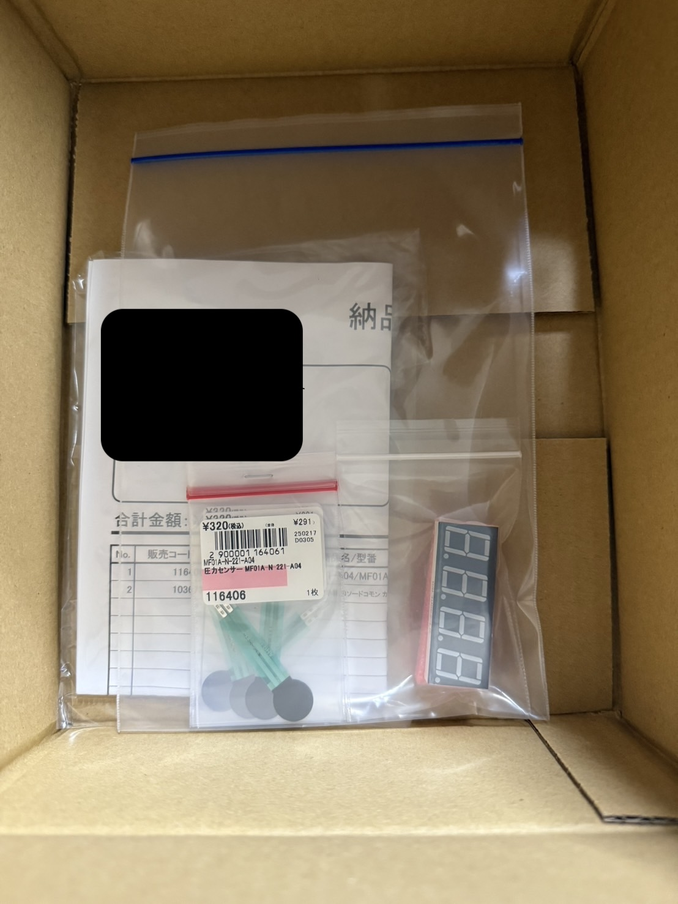

エアガンダーツ
一周目
自分たちのグループでは、ダーツをエアガンでやることにしました。
◾️ どのような作品にするのか考える。
● ダーツの的に、エアガンで球を打って、得点を競う。
センサは、圧力感知センサなどを使う。
→ 的のプロトタイプを作る。現段階でわかってる材料を買う。
プロトタイプ

材料

作品の全貌
自分たちの班は、ダーツのような遊びを、エアガンを用いてプレイする機会を作ることにしました。
エアガンで撃たれた球が、的に当たった時の衝撃を、感圧センサーで感知して、点数を割り出し、
その点数をスマホにIoTで表示するという内容です。
▪️ 最終的なプログラムのソースコードを考える
IoTをどこでどのように使うか考える
● センサーについてもっと理解する
センサーがどの範囲まで感知できるかテストする
→ センサーとArduinoを繋いだ
実際に繋いだ写真
◾️ 全部で12個のセンサーを繋げるため、その繋げ方を考える
ブレッドボードに線を刺しやすい方法を考える
● センサーがかなり強い力を加えないと動作しないため他のセンサーを探す
的の土台を考える
→ とりあえず、センサーが衝撃を感知して得点を出すソースコードは完成した。
センサーの振動がより正確に伝わるように、スポンジをいアタとセンサーの間に入れるなど、
センサーを変える以外の改善の余地も見られる。
◾️ ブレッドボードの規格が足りない問題を解決する方法を考える。
短いコードをどうやって延長するか考える。
● 的の設計をfusionで作る。
12個のセンサーをどう配置するか試しながら模索する。
→ 的の設計が完成。
ブレッドボードを購入。
土台の設計図
設計図